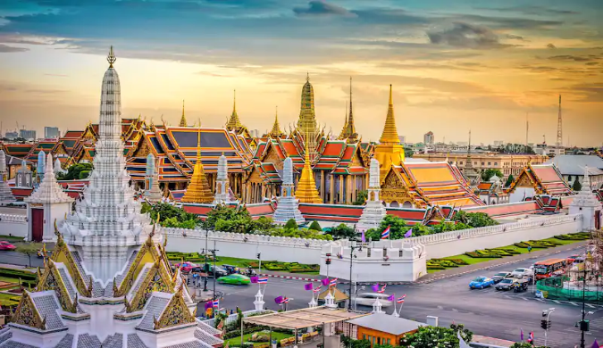

- Culture: Thai culture is deeply influenced by
Buddhism, emphasizing respect, humility, and harmonious relationships.
Traditional Thai dance, music, and art, often inspired by religious themes,
are integral to the cultural heritage.
- Customs: The traditional Thai greeting, the wai,
involves a slight bow with pressed palms, demonstrating respect.
Respect for elders and social hierarchy are essential aspects of Thai customs,
and the concept of "face" is crucial, avoiding public embarrassment or confrontation.
- Food: Thai cuisine is renowned for its bold flavors,
combining sweet, sour, salty, bitter, and spicy elements.
Staple ingredients include rice, coconut milk, lime, chili, and herbs.
Signature dishes include Pad Thai, Tom Yum soup, green curry, and Som Tum (green papaya salad).
- Festivals: Songkran, the Thai New Year,
is celebrated with water fights symbolizing cleansing and renewal.
Loy Krathong, the Festival of Lights, involves floating decorated baskets
on water to pay respects to water spirits.
- Religious Influence: Buddhism plays a significant role in Thai society,
and numerous temples, or wats, are spread across the country.
Wat Pho and Wat Arun in Bangkok are iconic examples.
- Traditional Clothing: Traditional Thai clothing includes the pha
nung (wrap-around skirt) for women and the pha chong kraben (sarong) for men.
However, modern Western attire is prevalent in urban areas.
|  |